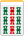
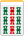

３月の純麻雀会、南１局の配牌。
        
思わずヨダレが出てきた。もちろんチャンタ サンシキに向けて一直線だ。しかし配牌を見たとたん脳裏を横切ったのは、40年前の失敗。
あまりに記憶に焼き付いている失敗なので、このHPのどっかで書いたかもしれない。二度読みになったらゴメンであるが、40年前 Aの家で同級生マージャンをしていたときのこと。何場の何局か覚えていないが、今回よりもすごい配牌だった。
     ドラ ドラ
は何牌だったか覚えていない。このときσ(-_-)は を第一打牌とした。“イーペーコーの目があるのに、なぜ？” いや、誰でもそう思う (/_；) いまのσ(-_-)だったら、もちろんは打たん。実はそのとき、瞬間的に（ジュンチャンサンシキはアガれても、イーペーコーまではムリだろう）と勝っ手に思った。そこで（ を第一打牌とした。“イーペーコーの目があるのに、なぜ？” いや、誰でもそう思う (/_；) いまのσ(-_-)だったら、もちろんは打たん。実はそのとき、瞬間的に（ジュンチャンサンシキはアガれても、イーペーコーまではムリだろう）と勝っ手に思った。そこで（ あたりで一メンツ、ついでにチャンタをカモフラージュ）と思ってを切った。すると次のツモが あたりで一メンツ、ついでにチャンタをカモフラージュ）と思ってを切った。すると次のツモが 。（アチャー）と顔をしかめつつ ツモ切ると、次のツモが 。（アチャー）と顔をしかめつつ ツモ切ると、次のツモが 。ツモったを見たとたん、目がクラクラっ。それでも４巡目か５巡目に 。ツモったを見たとたん、目がクラクラっ。それでも４巡目か５巡目に を引き、ようやくイーシャンテン。 を引き、ようやくイーシャンテン。

そこへ上家が を切った。もうアタマが真っ白になっているから、メンゼンで仕上げる余裕なんてない。“チーッ”と食いついた。その１，２巡後、誰かが切った を切った。もうアタマが真っ白になっているから、メンゼンで仕上げる余裕なんてない。“チーッ”と食いついた。その１，２巡後、誰かが切った でロン。 でロン。
振った奴が「おお、早いのに良い手だな」
「うん」とかなんとか適当に答えておいたが、腹の中は悶えまくっていた。(>_<；
冒頭の配牌を見たとき、この40年前の顛末を思い出した。（う〜ん、あのときの配牌のミニ版みたいだ...）などと思いつつ、第一ツモに手を伸ばした。そのツモ牌が。（おっ！）と思いつつ、 を切る。第２ツモが を切る。第２ツモが ！。（おお、ヒキの良さまで似てる...）。それから２巡 ツモ切りしたが、第５ツモが ！。（おお、ヒキの良さまで似てる...）。それから２巡 ツモ切りしたが、第５ツモが 。即リーして一発でツモ(^-^)v 。即リーして一発でツモ(^-^)v
  ツモ ツモ
これまでチャンタ サンシキは限りなくアガったが、こんなウレシイ配牌とツモのセットは２回目。なんとなく40年前の大失敗を少し返した気がしてうれしかった。(^-^；
|